Topic 6 Spatial Visualization
Learning Goals
- Plot data points on top of a map using the
ggmap()function along withggplot2functions
- Create choropleth maps using
geom_map()
- Add points and other
ggplot2features to a map created fromgeom_map()
- Understand the basics of creating a map using
leaflet, including adding points and choropleths to a base map
You can download a template .Rmd of this activity here. Put this in a new folder called Day_06 in your folder for COMP_STAT_112.
Plotting Points on a Map
There are many ways we could visually represent data on a map. The first we’ll talk about it in terms of points in a coordinate system (longitudinal, latitude).
Starbucks Example
The Starbucks data, compiled by Danny Kaplan, contains information about every Starbucks in the world at the time the data were collected. It includes the Latitude and Longitude of each location. Let’s start by using familiar ggplot plotting tools.
# Starbucks locations
Starbucks <- read_csv("https://www.macalester.edu/~ajohns24/data/starbucks.csv")
ggplot(data = Starbucks) +
geom_point(aes(x = Longitude, y = Latitude),
alpha = 0.2,
size = 0.2
) +
theme_classic()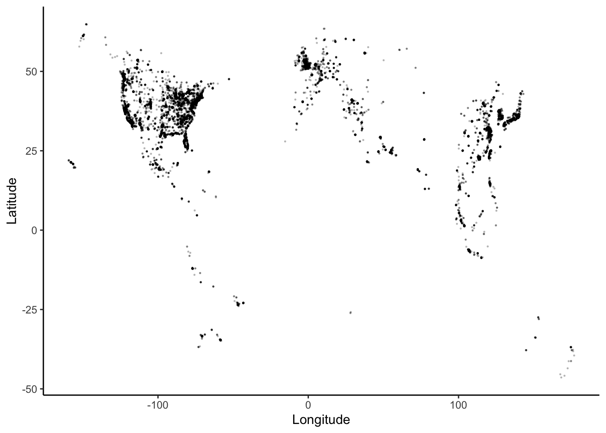
The code for a point pattern probably looks familiar. To highlight the geographical nature of this scatterplot, we can superimpose the points on top of a background map, using the ggmap() function from the ggmap library.
NOTE: We used to be able to easily bring in Google maps. As of mid-2018, in order to bring those in, you need to have a registered API key with Google. If you want to do that, see google_key in the help. Then, see the documentation for get_map(). We will bring in other types of maps since Google maps are harder to do now and require you to submit credit card information.
We will use a stamen map as our background. You can also take a look at stamen maps on their website. First, let’s look at an example.
# Get the map information
world <- get_stamenmap(
bbox = c(left = -180, bottom = -57, right = 179, top = 82.1),
maptype = "terrain",
zoom = 2
)
# Plot the points on the map
ggmap(world) + # creates the map "background"
geom_point(
data = Starbucks,
aes(x = Longitude, y = Latitude),
alpha = .3,
size = 0.2
) +
theme_map()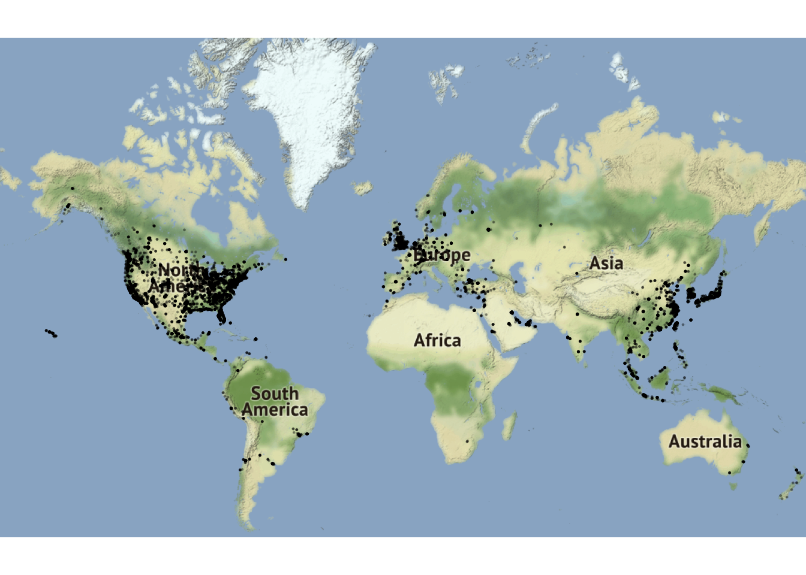
Next, we will walk through the get_stamenmap() function inputs or arguments. The code below is what was used to get the world map information.
get_stamenmap(
bbox = c(left = -180, bottom = -57, right = 179, top = 82.1),
maptype = "terrain",
zoom = 2
)bbox
get_stamenmap(
bbox = c(left = -180, bottom = -57, right = 179, top = 82.1),
maptype = "terrain",
zoom = 2
)The bbox argument tells it the minimum and maximum latitude and longitude points. So, left is the minimum longitude, right is the maximum longitude, bottom is the minimum latitude, and top is the maximum latitude. One helpful trick is to go to openstreetmap: zoom in on the area of interest, click export, and you will see all the values you need. You may have to modify them slightly, which you can do after your initial plot.
maptype
get_stamenmap(
bbox = c(left = -180, bottom = -57, right = 179, top = 82.1),
maptype = "terrain",
zoom = 2
)The maptype tells it the style of the map. Check out the different options by looking in the get_stamenmap help (type ?get_stamenmap in the console).
zoom
get_stamenmap(
bbox = c(left = -180, bottom = -57, right = 179, top = 82.1),
maptype = "terrain",
zoom = 2
)When you make a large area, you need to decrease the zoom, otherwise it will take too long to load. So, it’s a good idea to start with a small zoom and you can always make it bigger if you want. This might seem counter-intuitive at first. Think of the zoom level as the level of detail. So, smaller numbers show less detail and larger numbers more detail. A good trick is to go to the stamanmaps webpage and search for the location you are mapping. Then, in the URL, you can see the zoom number. For example, this link is a map of St. Paul: http://maps.stamen.com/#terrain/12/44.9531/-93.0904. Notice the number 12 next to /#terrain/. That means it is zoomed in at 12.
ggmap()
We save the the map information from get_stamenmap() to a named value and then use it in ggmap():
# Get the map information
world <- get_stamenmap(
bbox = c(left = -180, bottom = -57, right = 179, top = 82.1),
maptype = "terrain",
zoom = 2
)
# Plot the points on the map
ggmap(world) + # creates the map "background"
geom_point(
data = Starbucks,
aes(x = Longitude, y = Latitude),
alpha = .3,
size = 0.2
) +
theme_map()The ggmap() function will print the “background” map. Think of it as the providing the canvas on which we will plot. This takes the place of our usual ggplot().
ggmap(world)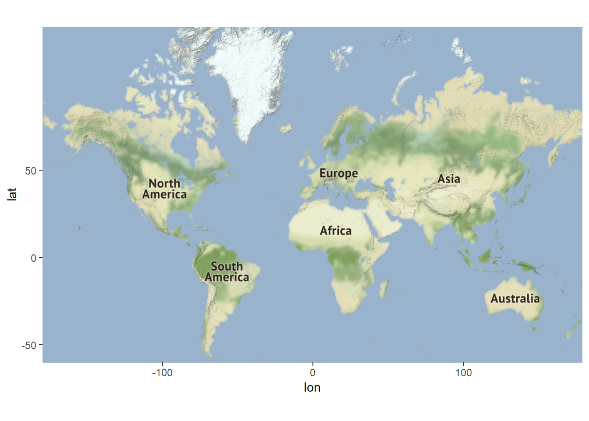
After that, we can use the geom_XXX() functions from ggplot2 that we are used to in order to put points, lines, etc. on top of the map. But, we need to remember to also provide the data we are using in the geom_XXX() function(s) we use since we do not have the ggplot() function in which to provide it.
# Get the map information
world <- get_stamenmap(
bbox = c(left = -180, bottom = -57, right = 179, top = 82.1),
maptype = "terrain",
zoom = 2
)
# Plot the points on the map
ggmap(world) + # creates the map "background"
geom_point(
data = Starbucks,
aes(x = Longitude, y = Latitude),
alpha = .3,
size = 0.2
) +
theme_map()theme_map()
The last line of the code is theme_map(). This is optional, but it often makes it look nice.
# Get the map information
world <- get_stamenmap(
bbox = c(left = -180, bottom = -57, right = 179, top = 82.1),
maptype = "terrain",
zoom = 2
)
# Plot the points on the map
ggmap(world) + # creates the map "background"
geom_point(
data = Starbucks,
aes(x = Longitude, y = Latitude),
alpha = .3,
size = 0.2
) +
theme_map()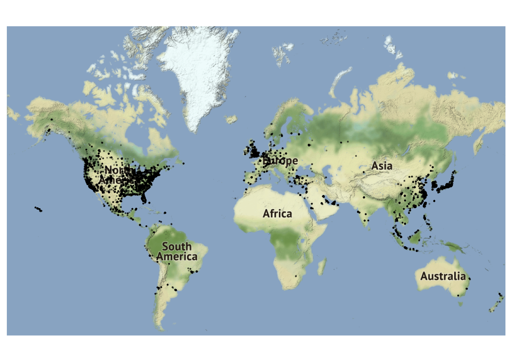
So, the final map as a world map as the background with points plotted on top that show the Starbucks locations. The points are 20 percent (0.2) of their usual size and have a transparency level of 0.3.
Resources
- Prof. Lendway’s demo video
- ggmap examples from
ggmapmaintainer David Kahle
ggmapcheatsheet
Exercise: More with Starbucks
Exercise 6.1 Now it is your turn to work with the Starbucks data.
- Add an aesthetic to the world map that sets the color of the points according to the ownership type. What, if anything, can you deduce from this visualization?
- Construct a new map of Starbucks locations in the Twin Cities metro area (approximately the five county metro area).
- In the Twin Cities plot, play with the zoom number. What does it do? (just describe what it does - don’t actually include more than one map).
- Try a couple different map types (see
get_stamenmap()in help and look atmaptype). Include a map with one of the other map types. - Add a point to the map that indicates Macalester College and label it appropriately. There are many ways you can do this, but it may be easiest with the
annotate()function (seeggplot2cheatsheet).
Solution
# a)
ggmap(world) +
geom_point(
data = Starbucks,
aes(
x = Longitude,
y = Latitude,
color = `Ownership Type`
),
alpha = .5,
size = .2
) +
scale_color_manual(values = c("blue", "red", "black", "purple")) +
theme_map() +
theme(legend.background = element_blank())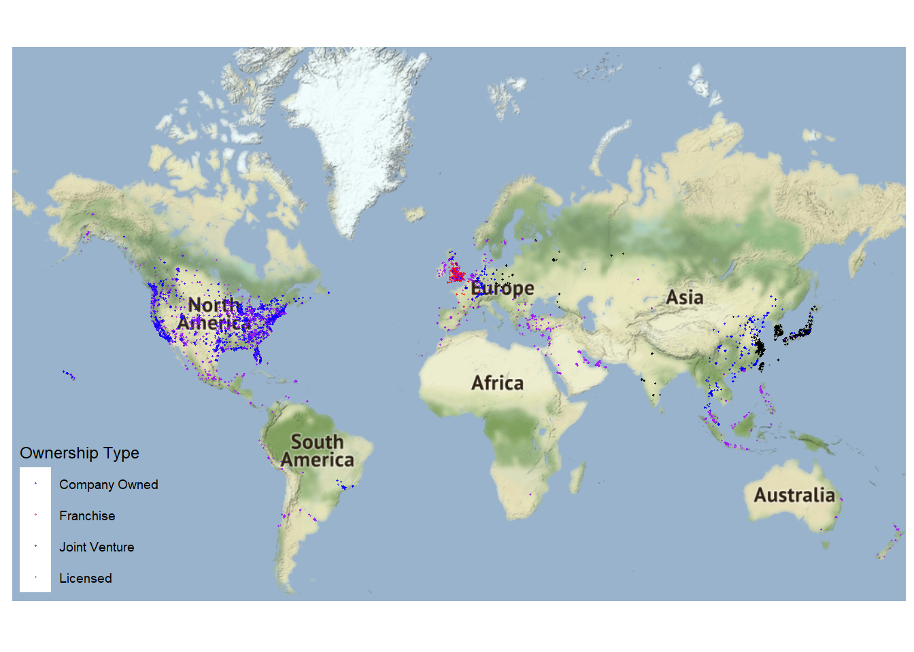
- It appears that most of the locations in the western hemisphere are company owned or licensed, while franchising is more common in western Europe and joint ventures are more common in eastern Asia.
# b)
TwinCities <- get_stamenmap(
bbox = c(left = -94, bottom = 44.5, right = -92.5, top = 45.5),
maptype = "toner",
zoom = 10
)
ggmap(TwinCities) +
geom_point(
data = Starbucks,
aes(x = Longitude, y = Latitude),
alpha = .5, size = .7,
color = "green"
)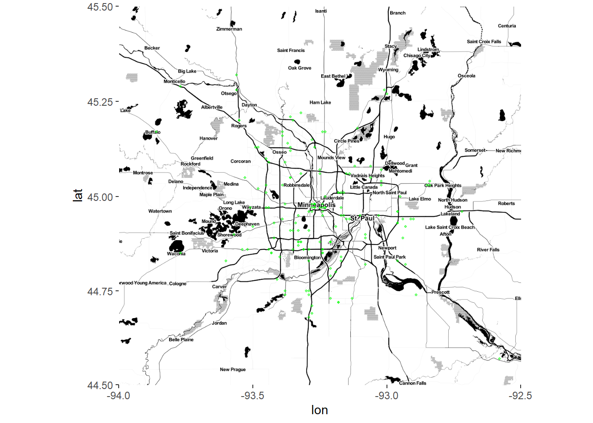
- A higher zoom number leads to more detail.
# d)
TwinCities2 <- get_stamenmap(
bbox = c(left = -94.5, bottom = 44.3, right = -91.94, top = 45.5),
maptype = "watercolor",
zoom = 10
)
ggmap(TwinCities2) +
geom_point(
data = Starbucks,
aes(x = Longitude, y = Latitude),
alpha = .7, size = 1,
color = "#00704A"
)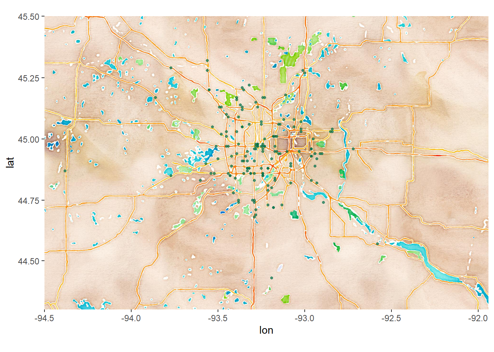
# e)
ggmap(TwinCities) +
geom_point(
data = Starbucks,
aes(x = Longitude, y = Latitude),
alpha = .7, size = 1,
color = "#00704A"
) +
annotate(
geom = "point",
x = -93.1712321,
y = 44.9378965,
color = "orange"
) +
annotate(
geom = "text",
x = -93.1712321,
y = 44.91,
color = "darkorange",
label = "MAC"
) +
theme_map() +
theme(legend.background = element_blank())
Contour Maps
The geom_density_2d and stat_density_2d functions are great for plotting distributions over spatial regions. Here is an example that shows the densities of Starbucks in the North America.
US_map2 <- get_stamenmap(
bbox = c(left = -132, bottom = 20, right = -65, top = 55),
maptype = "terrain",
zoom = 4
)
ggmap(US_map2) +
geom_density_2d(data = Starbucks, aes(x = Longitude, y = Latitude), size = 0.3) +
stat_density_2d(
data = Starbucks,
aes(x = Longitude, y = Latitude, fill = stat(level)),
size = 0.1, alpha = .2, bins = 20, geom = "polygon", color = 'darkblue'
) +
scale_alpha(guide = 'none') +
scale_fill_gradient(
low = "darkblue", high = "red",
guide = 'none'
)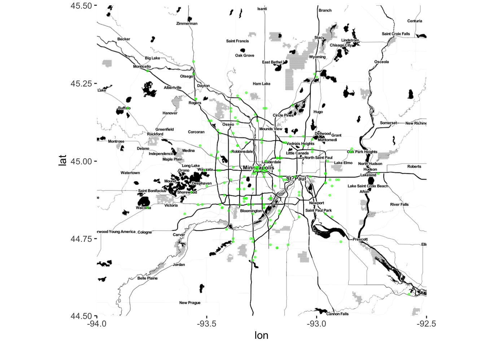
Choropleths
Geographical data needn’t be expressed by latitude and longitude. For choropleth maps, instead of visualizing our data as points with different aesthetics (size, color, transparency, etc.), we color different regions (or mathematically, polygons) on the maps based on data values. To do this we need to specify both the geometric regions on which the data resides (counties, states, zip codes, etc.), and then wrangle the data so that there is one value per region.
Let’s return to the Starbucks data. First, we will create a new dataset, starbucks_us_by_state that limits the data to the US, finds the number of Starbucks in each state, and creates a state name that is in all lowercase letters that matches the state name in the region variable of the states_map dataset.
The states_map dataset gives information about creating the borders of the US states. The data is retrieved using the map_data() function. Run ?map_data in the console to see more information about what other maps are available. There are also other packages that provide different types of maps.
Then, we can use geom_map() to create a choropleth map. Let’s take a look at the map and we’ll go through the details after.
# Create a new Starbucks dataset that
# - filters to the US
# - summarizes the number of Starbucks in each state
# - has full names of states in lowercase letters (to match to states_map data created next)
starbucks_us_by_state <- Starbucks %>%
filter(Country == "US") %>%
count(`State/Province`) %>%
mutate(state_name = str_to_lower(abbr2state(`State/Province`)))
# US states map information - coordinates used to draw borders
states_map <- map_data("state")
# map that colors state by number of Starbucks
starbucks_us_by_state %>%
ggplot() +
geom_map(
map = states_map,
aes(
map_id = state_name,
fill = n
)
) +
# This assures the map looks decently nice:
expand_limits(x = states_map$long, y = states_map$lat) +
theme_map()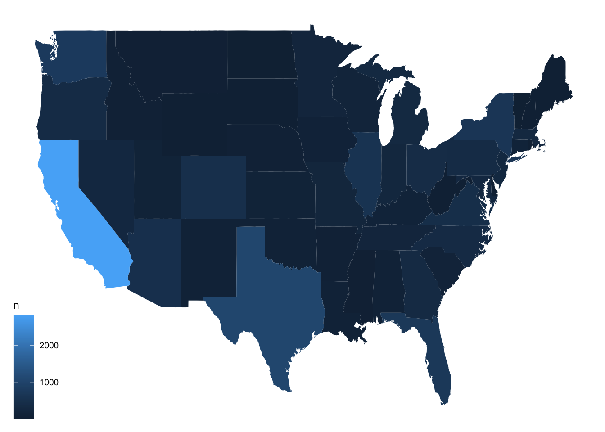
Now, let’s look more closely at what each piece of the code below is doing.
starbucks_us_by_state %>%
ggplot() +
geom_map(
map = states_map,
aes(
map_id = state_name,
fill = n
)
) +
expand_limits(x = states_map$long, y = states_map$lat) +
theme_map()Choose a Map
The map argument tells R at which level to create the map. Really, it tells it how to draw all the borders This is a very special data set. According to the geom_map() documentation, it is a “data frame that contains the map coordinates … It must contain columns x or long, y or lat, and region or id.” We are using the map_data() function to create the map file (see above for more details. You can open the map data, states_map, and see that it adheres to the rules.
starbucks_us_by_state %>%
ggplot() +
geom_map(
map = states_map,
aes(
map_id = state_name,
fill = n
)
) +
expand_limits(x = states_map$long, y = states_map$lat) +
theme_map()Connect Map ID/Region Variable to Data Being Plotted
The map_id inside of aes() is a required aesthetic for the geom_map() geom. It tells R which variable is the region/id variable, in this case the state. It connects the region or id from the map (region variable in states_map dataset, in this example) to the dataset being plotted (state_name in starbucks_us_by_state, in this example). So state_name needs to have the same form as region, which is why we modified the state names in starbucks_us_by_state.
starbucks_us_by_state %>%
ggplot() +
geom_map(
map = states_map,
aes(
map_id = state_name,
fill = n
)
) +
expand_limits(x = states_map$long, y = states_map$lat) +
theme_map()Use ggplot2 Features
We tell it to fill in the states by the variable n, the number of Starbucks in each state. With the geom_map() geom, it will fill in the borders of the regions we defined in the map argument.
starbucks_us_by_state %>%
ggplot() +
geom_map(
map = states_map,
aes(
map_id = state_name,
fill = n
)
) +
expand_limits(x = states_map$long, y = states_map$lat) +
theme_map()expand_limits()
Use expand_limits() to assure that the map covers the entire area it’s supposed to. We put the longitude variable from states_map for the x argument and the latitude variable from states_map for the y argument to assure the map stretches across the entire range of longitudes and latitudes in the map.
starbucks_us_by_state %>%
ggplot() +
geom_map(
map = states_map,
aes(
map_id = state_name,
fill = n
)
) +
expand_limits(x = states_map$long, y = states_map$lat) +
theme_map()theme_map()
This is a personal preference, but theme_map() often makes the map look nicer.
starbucks_us_by_state %>%
ggplot() +
geom_map(
map = states_map,
aes(
map_id = state_name,
fill = n
)
) +
expand_limits(x = states_map$long, y = states_map$lat) +
theme_map()Add ggplot2 Layers
You can add any of the ggplot2 layers on top of this map. In this example, we’ve added MN Starbucks as points, included a title, and changed the legend background (so it doesn’t have one).
starbucks_us_by_state %>%
ggplot() +
geom_map(
map = states_map,
aes(
map_id = state_name,
fill = n
)
) +
geom_point(
data = Starbucks %>% filter(`State/Province` == "MN"),
aes(x = Longitude, y = Latitude),
size = 0.05,
alpha = 0.2,
color = "goldenrod"
) +
expand_limits(x = states_map$long, y = states_map$lat) +
labs(title = "Starbucks in MN") +
theme_map() +
theme(legend.background = element_blank())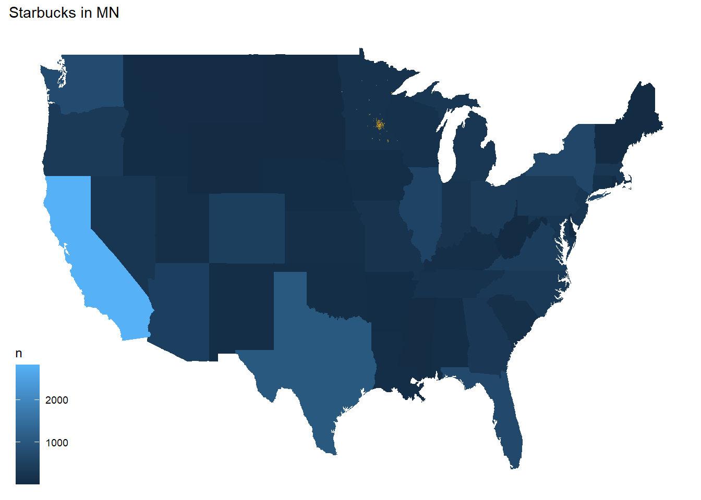
Resources
- Prof. Lendway’s demo video
- ggplot2 documentation
- Example by Arie Voorman (some things could be out of date since it’s from 2015)
Alternative Methods
There are plenty of other methods available to make choropleths in R.
Let’s demonstrate just three additional methods with data on the 2016 U.S. presidential election results by county:
elect <- read_csv("https://www.macalester.edu/~ajohns24/data/electionDemographics16.csv")
# reformat the FIPS region codes
elect <- elect %>% mutate(fips = ifelse(region < 10000, paste("0", as.character(region), sep = ""), as.character(region)))
# define appropriate (& nicely labeled) breaks
elect$brk <- cut(elect$perrep_2016,
breaks = seq(0, 100, by = 10),
labels = c(
"0-9", "10-19", "20-29", "30-39",
"40-49", "50-59", "60-69", "70-79", "80-89", "90-100"
),
include.lowest = TRUE
)First, we will load a map of the counties in the United States:
county_map <- socviz::county_map # from socviz library
mapping_data <- elect %>%
rename(id = fips) %>%
left_join(county_map, by = "id")Now here is the map with the method from above, using ggplot + geom_map:
ggplot(elect) +
geom_map(data = elect, map = county_map, aes(map_id = fips, fill = brk)) +
scale_fill_manual(values = rev(brewer.pal(10, "RdBu")), name = "Percent Republican") +
expand_limits(x = county_map$long, y = county_map$lat) +
theme_map() +
theme(legend.position = "right")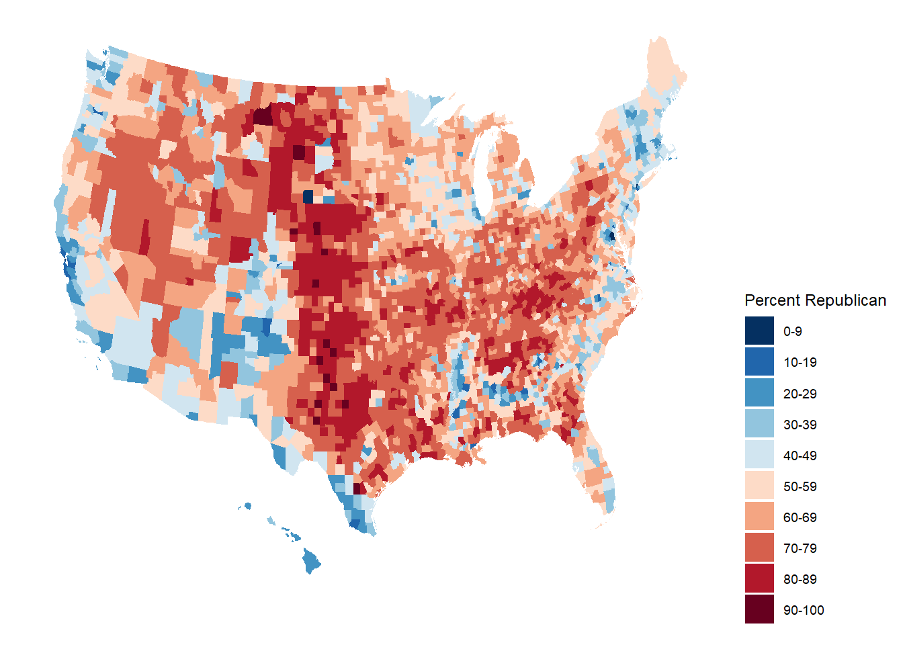
Alternative 1: ggplot + geom_polygon
ggplot(mapping_data, aes(x = long, y = lat, fill = perrep_2016, group = group)) +
coord_equal() +
geom_polygon(color = NA) +
scale_fill_gradientn(name = "Percent Republican", colours = c("blue", "purple", "red"), values = scales::rescale(seq(0, 100, by = 10))) +
theme_map() +
theme(legend.position = "right")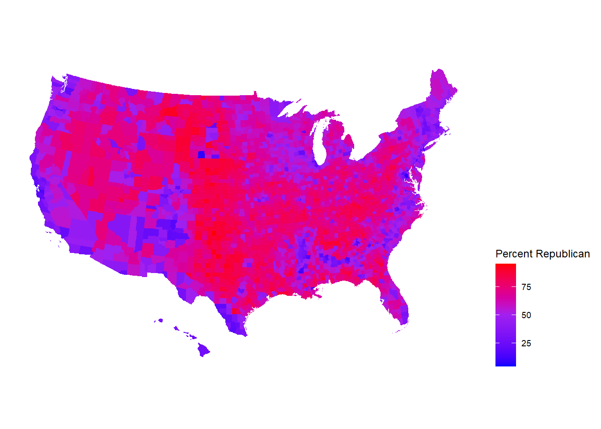
Exercise: Even More with Starbucks
The example above did not account for population of each state in the map. In the code below, a new variable is created, starbucks_per_10000, that gives the number of Starbucks per 10,000 people. It is in the starbucks_with_2018_pop_est dataset. Here is a link to the data
census_pop_est_2018 <- read_csv("https://bcheggeseth.github.io/112_fall_2022/data/us_census_2018_state_pop_est.csv") %>%
separate(state, into = c("dot", "state"), extra = "merge") %>%
select(-dot) %>%
mutate(state = str_to_lower(state))starbucks_with_2018_pop_est <-
starbucks_us_by_state %>%
left_join(census_pop_est_2018,
by = c("state_name" = "state")
) %>%
mutate(starbucks_per_10000 = (n / est_pop_2018) * 10000)Exercise 6.2 Create a choropleth state map that shows the number of Starbucks per 10,000 people on a map of the US. Use a new fill color, add points for all Starbucks in the contiguous US, add an informative title for the plot, and include a caption that says who created the plot (you!). Make a conclusion about what you observe.
Dynamnic Maps with leaflet
Leaflet is an open-source JavaScript library for creating maps. It can be used outside of R, but we will only discuss using the leaflet library in R.
This library uses a different plotting framework from ggplot2 although it still has a tidyverse feel due to its use of the pipe, %>% and the way it adds layers to the plot, just like in ggplot2.
Steps to Create a Map
- Create a map widget by calling
leaflet()and telling it the data to use.
- Add a base map using
addTiles()(the default) oraddProviderTiles(). - Add layers to the map by using layer functions (e.g. ,
addMarkers(),addPolygons()) to modify the map widget.
- Repeat step 3 as desired.
- Print the map widget to display it.
Creating a Map with Markers/Points
Below, we create a basic map and add points of interest (the points are a layer on the map). The data are in favorite_stp, created below.
The function we will use to create the maps will look for certain variable names for latitude (lat, latitude) and longitude (lng, long, or longitude). If you do not name them one of those things or if the data you are using doesn’t name them that, you need to call out the name explicitly (you’ll see that next). You can use a “two-finger scroll” to zoom in and out.
# Brianna's favorite St. Paul places - Used Google Maps to get coordinates
# https://support.google.com/maps/answer/18539?hl=en&co=GENIE.Platform%3DDesktop
favorite_stp <- tibble(
place = c(
"Macalester College", "Groveland Recreation Center",
"Due Focacceria", "Shadow Falls Park", "Mattocks Park",
"Carondelet Fields", "Pizza Luce", "Cold Front Ice Cream"
),
long = c(
-93.1712321, -93.1851310,
-93.1775469, -93.1944518, -93.171057,
-93.1582673, -93.1524256, -93.156652
),
lat = c(
44.9378965, 44.9351034, 44.9274973,
44.9433359, 44.9284142, 44.9251236,
44.9468848, 44.9266768
)
)leaflet(data = favorite_stp) %>% # base plot
addTiles() %>% # base map - default is openstreet map
addMarkers() # Adds markers - knows lat and long from names in dataThe graph below is the same as above, but the code explicitly specifies latitude and longitude, which you would need to do if those variables had a name not recognized by the function, and adds labels. WARNING: DO NOT FORGET THE ~ BEFORE THE VARIABLE NAMES!!!
leaflet(data = favorite_stp) %>%
addTiles() %>%
addMarkers(
lng = ~long,
lat = ~lat,
label = ~place
)We can change just about everything about our map. The plot below is the same plot as above with some aesthetic changes:
We changed the base map with
addProviderTiles().To see all available provider base maps, type
providersin the console.To access those maps, use
providers$PROVIDERNAMEinside theaddProviderTiles()function, wherePROVIDERNAMEis one of those listedproviders. When you typeprovider$a list should show up that you can click on.
We changed the marker type by using
addCircles()instead ofaddMarkers()- SearchaddControlin the Help or type?addControlinto the console to see what all the arguments mean and how you can change them.All variable arguments are preceded with a tilde,
~.The
weightargument tells it how thick to make the lines or points, pixels.The
opacityargument is the transparency, like thealphaargument inggplot2.Colors need to be in “hex” form. We used the
col2hex()function from thegplotslibrary to do that. The colors also need to be valid R colors.
leaflet(data = favorite_stp) %>%
addProviderTiles(providers$Stamen.Watercolor) %>%
addCircles(
lng = ~long,
lat = ~lat,
label = ~place,
weight = 10,
opacity = 1,
color = col2hex("darkblue")
)The map below is also the “same” as the ones above, but with a new base map and a line to trace a route, which was created with the addPolylines() layer. It traces the locations in the order they are entered in the dataset.
leaflet(data = favorite_stp) %>%
addProviderTiles(providers$CartoDB.DarkMatter) %>%
addCircles(
lng = ~long,
lat = ~lat,
label = ~place,
weight = 10,
opacity = 1,
color = col2hex("darkred")
) %>%
addPolylines(
lng = ~long,
lat = ~lat,
color = col2hex("darkred")
)Choropleth Layers with addPolygons()
For making maps with borders (like choropleth maps), the functions can receive the base maps with spatial data a few different ways. In the example here, we use functions from the sf package to get the data in the right form. In the demo video listed under Resources below, a data.frame is translated to an sf object. Hopefully those two sets of instructions fit most of the cases you are interested in.
In the code chunk below, the function st_read() downloads the shape file for the counties of North Carolina, which is included in the sf package.
# North Carolina births and sids deaths
nc <- st_read(system.file("shape/nc.shp", package = "sf"),
quiet = TRUE
) %>%
mutate(sid_per_1000birth_79 = SID79 / BIR79 * 1000)
# Compute centroid (center) of each county
county_centroid_lat_long <- as_tibble(st_coordinates(st_centroid(nc))) %>%
rename(
centr_long = X,
centr_lat = Y
)
# County names and sid_per_1000birth_79
nc_centroid_county <- st_drop_geometry(nc) %>%
select(NAME, sid_per_1000birth_79)
# All centroid level info
nc_centroid <- county_centroid_lat_long %>%
bind_cols(nc_centroid_county)The dataset has number of births and number of SIDS cases in each county of North Carolina from 1974-1979 and 1979-1984. We computed a variable called sid_per_1000birth_79 which is the number of SIDS cases per 1000 births in 1979.
Below, the the NAMES and geometry variables from the first five rows of the data are printed out. The geometry variable contains information about how to plot the boundaries of the counties. Open the dataset and examine the geometry variable. The leaflet function knows that the geometry variable contains this special information.
nc %>%
select(NAME, geometry) %>%
slice(1:5)## Simple feature collection with 5 features and 1 field
## Geometry type: MULTIPOLYGON
## Dimension: XY
## Bounding box: xmin: -81.74107 ymin: 36.07282 xmax: -75.77316 ymax: 36.58965
## Geodetic CRS: NAD27
## NAME geometry
## 1 Ashe MULTIPOLYGON (((-81.47276 3...
## 2 Alleghany MULTIPOLYGON (((-81.23989 3...
## 3 Surry MULTIPOLYGON (((-80.45634 3...
## 4 Currituck MULTIPOLYGON (((-76.00897 3...
## 5 Northampton MULTIPOLYGON (((-77.21767 3...To learn more about the data type nc into the Help menu or ?nc into the console.
This plot puts the map with North Carolina county borders on top of the Open Street Map. This map isn’t that interesting by itself.
leaflet(nc) %>%
addTiles() %>%
addPolygons()Now, let’s use some of the data to enhance the graph by creating a choropleth map where we color the counties by sid_per_1000birth_79. In ggplot(), we can map a variable to color or fill inside the aesthetic, but in the leaflet functions we cannot do this. Instead, we need to create a variable of hex color names that tells it how to color or fill. Thankfully, there are functions that help us do that! Let’s walk through the detail of how we created the graph below.
# creates a function that can be used to map a variable to
# the color palette using viridis
pal <- colorNumeric("viridis",
domain = nc$sid_per_1000birth_79
)
leaflet(nc) %>%
addTiles() %>%
addPolygons(
fillColor = ~ pal(sid_per_1000birth_79), # fills according to that variable
fillOpacity = 0.7
) # like alpha in ggplotThe colorNumeric() function returns a function that maps a variable’s values to colors in the given palette, in this case “viridis”. So, pal() is a function. We can then use that function inside addPolygons(). If we apply the function to the sid_per_1000birth_79 variable, it returns a variable of hex colors and the variable of colors is used to fill the counties.
Below we print out what happens when pal() is applied to sid_per_1000birth_79. We can see that it returns hex colors. So, the variable in the fillColor argument inside addPolygons() above, is a variable of hex color names.
head(pal(nc$sid_per_1000birth_79))## [1] "#440154" "#C0DF25" "#38588C" "#2A778E" "#34618D" "#26828E"Again, this is different from ggplot(), where we could map a variable to color or fill and it would do the translating of variable to color scale for us. In the leaflet functions, we have to explicitly provide the colors in a variable. The colorNumeric() command helps you do that. colorBin(), colorQuantile(), and colorFactor() are other functions you might need to use depending on the type of variable you are trying to map to colors.
There are many customizeable options in leaflet, much like ggplot(). Here is a commented set of code to point out some useful functions and arguments:
# creates a function that can be used to map a variable to
# the color palette using viridis
pal <- colorNumeric("viridis",
domain = nc$sid_per_1000birth_79
)
leaflet(nc) %>%
addTiles() %>%
addPolygons(
# skips drawing the borders:
stroke = FALSE,
# fills according to variable of hex colors:
fillColor = ~ pal(sid_per_1000birth_79),
# changes transparency, like alpha in ggplot
fillOpacity = 0.7,
# how much to simplify the plot when zooming:
smoothFactor = 0.5,
# changes what happens to the shape when we mouse over it
highlight = highlightOptions(
weight = 5,
color = "black",
fillOpacity = 0.9,
bringToFront = FALSE
)
) %>%
addCircles(
data = nc_centroid,
lng = ~centr_long,
lat = ~centr_lat,
# label that appears when you click on the marker,
# in this case county name and sid_per_1000birth_79
# rounded to the 2nd decimal
popup = ~ paste(NAME, ": ",
round(sid_per_1000birth_79, 2),
sep = ""
),
radius = 2
) %>%
# Add a legend
addLegend(
pal = pal,
values = ~sid_per_1000birth_79,
opacity = 0.5,
title = NULL,
position = "bottomright"
)Resources
- Prof. Lendway’s introductory video
- Prof. Lendway’s demo video
- Detailed
leafletdocumenation (with examples) leafletcheat sheet- Provider map previews
- Tutorial by Andrew Ba Tran, investigative data reporter at Washington Post
- For more advanced work with spatial mapping, GIS in R, etc. see the sf package.
Exercise: Favorite Places
Exercise 6.3 In this exercise, you are going to create a single map of some of your favorite places! The end result will be one map.
- Create a data set using the
tibble()function that has 10-15 rows of your favorite places. The columns will be the name of the location, the latitude, the longitude, and a column that indicates if it is in your top 3 favorite locations or not. For an example of how to usetibble(), look at thefavorite_stpthat is created manually above.
- Create a map that uses circles to indicate your favorite places. Label them with the name of the place. Choose the base map you like best. Color your 3 favorite places differently than the ones that are not in your top 3. Add a legend that explains what the colors mean.
- If there are other variables you want to add that could enhance your plot, do that now. You could also connect all your locations together with a line in a meaningful way (you may need to order them differently in the original data).
Appendix: R Functions
Mapping Points Functions
| Function/Operator | Action | Example |
|---|---|---|
ggmap() |
Create a plotting canvas with a map background | ggmap(world) + geom_point(...) |
get_stamenmap(bbox,maptype,zoom) |
Fetches a stamen map as background | get_stamenmap(bbox = c(left = -180, bottom = -57, right = 179, top = 82.1), maptype = "terrain", zoom = 2) |
ggthemes::theme_map() |
Clean plotting themes for maps | ggmap(world) + geom_point(...) + theme_map() |
Contour/Density Mapping Functions
| Function/Operator | Action | Example |
|---|---|---|
geom_density_2d |
Plots contour maps (2d density) | ggmap(world) + geom_density_2d(data,aes(x,y)) |
stat_density_2d |
Plots a filled in contour heat map | ggmap(world) + state_density_2d(data,aes(x,y,fill = stat(level)),geom='polygon') |
scale_fill_gradient(low,high) |
Change fill gradient scale based on a low and high color | ggmap(world) + geom_point(...) + scale_fill_gradient(low='darkblue',high='red') |
Choropleths Mapping Functions
| Function/Operator | Action | Example |
|---|---|---|
map_data() |
Get map region boundaries from maps package into a dataframe for plotting with ggplot2 | state_map <- map_data('state') |
geom_map() |
Links map regions with data set with info about regions and plots it | ggplot(starbucks_us_by_state) + geom_map(map = states_map,aes(map_id = state_name,fill = n)) |
expand_limits(x,y) |
Ensure limits include data values in x and y | + expand_limits(x = states_map$long, y = states_map$lat) |
Dynamic Mapping Functions
| Function/Operator | Action | Example |
|---|---|---|
leaflet(data) |
Create base dynamic plot | leaflet(data = favorite_stp) |
addTiles() |
Adds the base map - default is openstreet map | + addTiles() |
addProviderTiles() |
Adds the alternative base maps | + addProviderTiles(providers$Stamen.Watercolor) |
addMarkers(lng,lat,label) |
Add marker glyphs to dynamic map | + addMarkers(lng= ~long, lat= ~lat, label=~place) |
addCircles(lng,lat,label,weight,opactiy,color) |
Add circle glyphs to dynamic map | + addCircles(lng= ~long, lat= ~lat, label=~place, weight=10,opacity=1,color = col2hex('darkblue')) |
addPolylines(lng,lat) |
Add lines that connect locations to dynamic map | + addPolylines(lng= ~long, lat= ~lat, color = col2hex('darkred')) |
addPolygons(fillColor,fillOpacity) |
Add polygons to dynamic map (if data is sf class) | + addPolygons() |